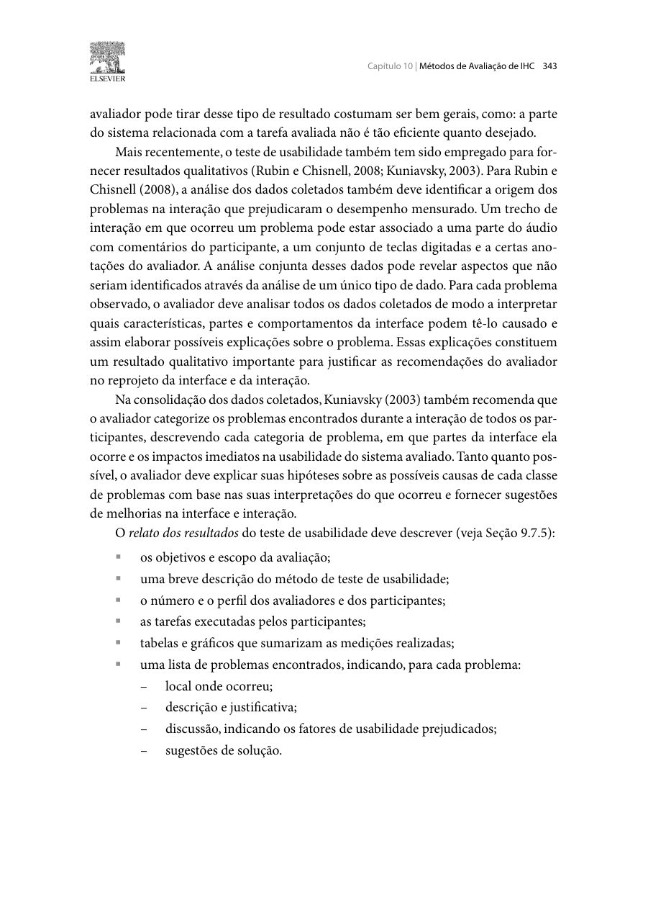

Responsável: Bruno Ferreira Dornelas — Complementos de ideias legislativas · Autor do item: Bruno Ferreira Dornelas
Roteiro do teste de alta fidelidade — complementos de ideias legislativas
Material da Etapa 6, reunido com o roteiro presencial.
Tabela de contribuição
A Tabela 1 identifica a origem do protocolo e o apoio à preparação dos materiais.
| Integrante / ferramenta | Contribuição | Artefato / atividade |
|---|---|---|
| Bruno Ferreira Dornelas | Planejamento de origem, definição do recorte e responsabilidade acadêmica | Planejamento da avaliação |
| Codex (OpenAI) | Implementação do protótipo navegável, painel do moderador e elaboração do roteiro operacional | Agradecimentos |
Tabela 1 — Contribuições na preparação do material de avaliação.
Fonte: elaboração para o Grupo 06 (2026).
Introdução
Este roteiro operacionaliza as tarefas AF-T1 a AF-T4 e as perguntas AF-Q1 a AF-Q6 definidas na Etapa 6 [1]. A avaliação verifica a proposta de sugerir e acompanhar complementos de ideias legislativas, desde a busca até a consulta do anexo encaminhado à CDH. O material prepara a coleta; não registra avaliação realizada nem resultados com participantes.
- Abrir protótipo navegável AF-1.0.
- Abrir protótipo no Figma.
- Editar as telas no Figma.
- Abrir protótipo para avaliação mediada.
- Abrir painel e roteiro resumido do moderador.
- Consultar a estrutura do relato e as fichas de evidência.
O protótipo utiliza HTML, CSS e JavaScript, com navegação por teclado, busca, formulário, revisão, decisão sobre ajuste e estados de acompanhamento. A referência visual é a interface web do e-Cidadania observada em 10/11/2026 [3–4]: cabeçalho institucional, menus, marca, busca, identidade azul e laranja das ideias legislativas, linha do tempo e rodapé. Os complementos, a moderação desse fluxo e o anexo consultivo são propostas do Grupo 06, não funcionalidades verificadas no serviço oficial. As seções institucionais fora desse recorte abrem explicações locais; não são réplicas funcionais de todos os serviços do Senado.
Item de conteúdo da disciplina
Autor do item: Bruno Ferreira Dornelas.
Barbosa e Silva (2010, p. 343 [2]) orientam a análise conjunta das ações, falas e medições para interpretar problemas de interação e fundamentar sugestões de melhoria. O relato deve identificar objetivos, método, participantes, tarefas, medidas e problemas com localização, justificativa e fatores de usabilidade afetados. Por isso, cada observação deste roteiro deve ser associada à tarefa, ao estado da interface e a um minuto da gravação. A Figura 1 apresenta o trecho de referência.
Figura 1 — Análise e relato dos resultados do teste de usabilidade

Figura 1 — Análise das evidências e estrutura do relato.
Fonte: Barbosa e Silva (2010, p. 343 [2]).
Preparação e funcionamento
Antes da sessão
- Realizar o piloto
PP-AF01com uma pessoa distinta do participante principal e que não tenha construído o protótipo. Verificar compreensão dos enunciados, legibilidade, gravação e transições. Separar seus dados dos resultados principais. - Confirmar participante e observadores. Registrar código
AF-P01, perfil resumido, participação em etapas anteriores, data real, dispositivo, navegador e versão avaliada. A previsão é de uma sessão exploratória de 30–40 minutos, conforme o planejamento [1]. - Confirmar o consentimento e as autorizações específicas para gravação de tela/áudio e eventual publicação acadêmica. Manter termo e identificação fora do repositório público.
- Abrir somente as abas necessárias. Utilizar a conta fictícia Letícia Oliveira; o acesso de demonstração não pede CPF, senha ou conta gov.br real.
- Reiniciar o cenário no painel. Conferir página inicial, ausência de complemento enviado e funcionamento da busca. Congelar a versão após os ajustes do piloto; registrar qualquer alteração posterior.
- Compartilhar apenas a aba do protótipo. Não exibir este roteiro, os critérios de sucesso nem o painel durante as tarefas.
Acesso local e remoto
A versão Figma contém 25 telas e estados, com caminhos para envio, comparação, concordância, discordância, revisão, publicação e anexo. O fluxo “Fluxo completo · complementos” começa na busca; “Roteiro e orientações” apresenta o percurso demonstrativo. Os campos carregam o exemplo predefinido por clique; não há digitação livre nem armazenamento equivalente ao HTML. A tipografia utiliza Roboto, alternativa presente na pilha CSS, pois Segoe UI não estava disponível no ambiente de criação. Registrar a plataforma utilizada e não combinar medidas das duas versões como se fossem a mesma interface.
No teste livre, controles identificados como Demonstração permitem simular a resposta do autor, a aprovação da moderação e o encaminhamento à CDH, preservando o texto digitado. As atualizações não chegam automaticamente. Para a sessão com participante, abrir index.html?modo=avaliacao, que oculta esses controles, e conduzir as transições pelo painel ou pelos atalhos abaixo, nos momentos previstos nas tarefas.
No computador com o repositório, abrir docs/prototipos/bruno/alta-fidelidade/index.html em um navegador. Os arquivos também podem ser servidos por HTTP estático. Para sincronizar o painel com o protótipo, preferir HTTP e manter ambos no mesmo navegador e endereço de origem. A pasta contém a marca e todos os recursos necessários; não depende de login externo ou de API do Senado.
Em teste remoto, a pessoa participante precisa abrir a sua própria cópia dos arquivos ou um endereço publicado da versão revisada. Um endereço 127.0.0.1 funciona somente no computador que está executando o servidor. O painel de Bruno não controla o navegador do participante pela internet.
Para atualizar o cenário no computador remoto, solicitar o atalho correspondente fora do intervalo cronometrado da tarefa, anunciar apenas que o cenário recebeu uma atualização e registrar a operação. Não revelar a interpretação esperada da tela. A Tabela 2 reúne os comandos disponíveis na aba do protótipo.
| Momento | Comando na aba do participante | Condição |
|---|---|---|
| Após concluir AF-T2 | Ctrl + Alt + 1 |
O complemento já foi enviado; simula a resposta do autor |
| Após concordar em AF-T3 | Ctrl + Alt + 2 |
O texto aguarda moderação; simula publicação |
| Após discordar em AF-T3 | Ctrl + Alt + 4 |
A discordância já foi registrada; carrega um exemplo independente publicado para AF-T4 |
| Entre os momentos 1 e 2 de AF-T4 | Ctrl + Alt + 3 |
O complemento está publicado; simula a meta de apoios e o encaminhamento |
Tabela 2 — Operação das atualizações do cenário remoto.
Fonte: implementação do protótipo AF-1.0 (2026).
Os atalhos podem conflitar com configurações de teclado. Conferir no piloto. Como alternativa, a pessoa pode abrir o painel no próprio navegador durante uma pausa, executar a atualização indicada e voltar ao protótipo. Registrar essa exposição como limitação. A simulação não envia e-mails: representa visualmente a notificação prevista no fluxo.
Abertura: fala sugerida
Estamos avaliando este protótipo, não você. Não há problema em encontrar dificuldades. Faça as atividades como faria normalmente e diga em voz alta o que está procurando, o que espera encontrar e o que entende das telas. Você pode pedir uma pausa ou encerrar a participação quando quiser. Usaremos apenas dados fictícios.
Confirmar que a pessoa consegue ler e operar a interface. Não explicar previamente onde está a funcionalidade de complementos, como os contadores se relacionam ou o significado do encaminhamento à CDH.
Tarefas para a pessoa participante
Entregar um enunciado por vez. As notas de observação abaixo pertencem ao moderador e não devem ser lidas para a pessoa.
AF-T1 — Localizar a ideia e escolher como participar
Ler:
Você quer contribuir para que pessoas ocupadas durante o dia possam usar bibliotecas comunitárias à noite. Procure o que já existe no portal e escolha como participar.
Estado inicial: página Ideia Legislativa (AF-S01a), sem acesso fictício iniciado.
Observar: pesquisa por assunto; abertura da ideia “Incentivo às bibliotecas comunitárias”; leitura dos detalhes e escolha de sugerir complemento (AF-S01b). Não mencionar o nome do botão no enunciado. Se a pessoa entrar pelo cartão em destaque, registrar o desvio e o resultado; não afirmar que a busca foi testada. Se ela apenas apoiar a ideia, registrar a ação antes de qualquer esclarecimento.
Término: ao escolher como sugerir o complemento ou ao desistir. Aplicar a pergunta de satisfação.
AF-T2 — Redigir, revisar e enviar
Ler:
Envie a sua contribuição sobre o atendimento noturno para essa ideia e verifique o que acontece após confirmar o envio.
Entregar o cartão de apoio:
Título: Atendimento noturno
Texto: Incentivar o atendimento noturno nas bibliotecas comunitárias para permitir o acesso de pessoas que trabalham ou estudam durante o dia.
Estado inicial: ideia selecionada; acesso fictício e formulário AF-S02.
Observar: uso da conta Letícia, preenchimento, revisão, possibilidade de editar antes de confirmar, conclusão do envio e leitura da espera pelo autor (AF-X01a). O formulário permite digitação livre; registrar alterações feitas pela pessoa.
Pergunta neutra ao final: “O que você entende que acontece agora?”
Critério: enviar após revisar e demonstrar compreensão de que aguarda o autor e receberá aviso no e-mail cadastrado. Não simular a resposta antes da leitura e da explicação espontâneas. Aplicar satisfação; então pausar o cronômetro e atualizar o cenário para a próxima tarefa.
AF-T3 — Avaliar o ajuste do autor
Preparação: simular resposta do autor no painel ou por Ctrl + Alt + 1.
Ler:
O autor da ideia respondeu sobre a sua contribuição. Compare os textos apresentados e decida como prosseguir.
Observar: acesso à resposta, leitura dos dois textos completos em AF-S03, identificação da condição acrescentada e justificativa da decisão. O ajuste inclui “conforme a demanda da comunidade e as condições de cada biblioteca”.
Pergunta neutra: “O que levou você a escolher essa opção?”
Concordar e discordar são decisões válidas. Na concordância, observar a espera pela moderação (AF-X01b). Na discordância, observar o registro do motivo e a compreensão de que a decisão permanece em aberto (AF-X02). Não pressionar a pessoa a concordar para continuar.
Após registrar os dados e a satisfação, preparar AF-T4. Se houve concordância, simular publicação. Se houve discordância, anunciar: “A próxima atividade usa outro exemplo, no qual um complemento já foi acordado e publicado”, carregar o cenário independente e registrar a troca. Não atribuir a publicação à decisão anterior da pessoa.
AF-T4 — Conferir publicação e encaminhamento
Ler:
Consulte novamente a ideia legislativa para ver como ficou a sua contribuição agora e, depois da atualização de tempo, explique o que aconteceu com a proposta.
Momento 1 — Publicação (AF-S04): observar abertura da ideia, identificação de Letícia como autora, selo “Seu complemento publicado”, ausência de botão para apoiar o próprio complemento e distinção entre 12.343 / 20.000 apoios à ideia e 40 ao complemento. Se a pessoa apoiou a ideia antes, o contador será 12.344; registrar esse estado efetivo.
Pergunta neutra: “O que esta página informa sobre a sua contribuição?”
Registrar a interpretação antes de avançar. Pausar o cronômetro e simular passagem do tempo por painel ou Ctrl + Alt + 3. Dizer apenas: “O cenário foi atualizado. Continue a consulta.”
Momento 2 — Encaminhamento (AF-S05): observar a leitura da nova situação, a localização do Anexo Consultivo #1, a permanência do texto acordado e dos 40 apoios próprios, e a distinção entre encaminhamento à CDH e aprovação de lei.
Pergunta neutra: “O que mudou e o que você entende que acontece a partir daqui?”
Classificar como concluída sem ajuda apenas se houver compreensão nos dois momentos. Não antecipar a explicação sobre contadores, anexo ou aprovação. Aplicar a satisfação ao final.
Registro e intervenções
Após cada tarefa, perguntar:
De 1 a 5, quão satisfeito(a) você ficou com a experiência de realizar esta tarefa e por quê?
A Tabela 3 pode ser copiada para a ficha de sessão. Preencher somente com observações reais.
| Tarefa | Conclusão | Tempo ativo / pausas | Erros, hesitações e ajuda | Satisfação 1–5 e justificativa | Minuto / evidência |
|---|---|---|---|---|---|
| AF-T1 | |||||
| AF-T2 | |||||
| AF-T3 | |||||
| AF-T4, momento 1 | |||||
| AF-T4, momento 2 |
Tabela 3 — Ficha de observação por tarefa.
Fonte: adaptação do planejamento do relato da Etapa 6 [1].
- Conclusão: sem ajuda, com ajuda, não concluída ou não avaliada. Registrar o motivo da classificação. AF-T4 recebe uma nota de satisfação ao final; manter as duas partes discriminadas na observação.
- Tempo: começar após a leitura do enunciado e terminar ao alcançar o resultado ou desistir. Separar falhas técnicas, operações de simulação e pausas. O cronômetro não deve continuar durante atualização do cenário.
- Ajuda: repetir o enunciado ou perguntar “O que você faria se estivesse sozinho(a)?”. Se for preciso indicar um controle ou explicar um estado, registrar a fala exata e classificar a conclusão com ajuda. Nunca reclassificar uma interpretação induzida como espontânea.
- Bloqueio: registrar onde ocorreu, oferecer encerramento da tarefa e preparar a próxima situação. Não completar silenciosamente a atividade pela pessoa.
- Evidência: associar
AF-EV01em diante a tarefa, tela, pergunta de avaliação e minuto do vídeo. Distinguir citação literal de paráfrase.
Encerramento e análise
Perguntar o que foi mais difícil, o que não ocorreu como esperado e o que a pessoa mudaria. Agradecer a participação e confirmar o encerramento da gravação.
Depois, conferir os tempos e as falas na gravação; preencher as matrizes AF-Q1–AF-Q6 e de problemas AF-A01 em diante previstas no planejamento do relato. Verificar separadamente os efeitos das correções PP-A01–PP-A04. Registrar local, descrição, evidência, fator afetado, prioridade e sugestão de melhoria.
A amostra individual permite observações exploratórias, não estimativas populacionais. Registrar experiência anterior, mediação remota, uso dos atalhos, troca de cenário após discordância e partes não avaliadas. Correções feitas após a sessão sem novo teste permanecem “corrigidas, não reavaliadas”.
Agradecimentos
O Codex (OpenAI) apoiou a implementação do protótipo, as verificações técnicas e a elaboração do roteiro com base no planejamento existente. Bruno Ferreira Dornelas mantém a responsabilidade acadêmica. A revisão humana prevista é de Luís Henrique Arruda Luna; este registro não comprova sua realização.
Histórico de versão
| Versão | Data | Descrição | Autor(es) | Revisor(es) |
|---|---|---|---|---|
1.0 |
10/11/2026 | Preparação do protótipo AF-1.0, instruções operacionais e roteiro das quatro tarefas | Bruno Ferreira Dornelas | Luís Henrique Arruda Luna |
1.1 |
10/11/2026 | Inclusão de controles visíveis para teste livre e acesso sem esses controles para avaliação mediada | Bruno Ferreira Dornelas | Luís Henrique Arruda Luna |
1.2 |
10/11/2026 | Inclusão do arquivo editável, protótipo Figma e diferenças operacionais em relação ao HTML | Bruno Ferreira Dornelas | Luís Henrique Arruda Luna |
1.3 |
10/11/2026 | Organização do roteiro e dos acessos ao protótipo na Etapa 6 | Bruno Ferreira Dornelas | Luís Henrique Arruda Luna |
Tabela 4 — Histórico de versão do material de teste.
Fonte: elaboração para o Grupo 06 (2026).
Referências
[1] GRUPO 06. Planejamento da avaliação de alta fidelidade, planejamento do relato e relato do protótipo de papel. 2026.
[2] BARBOSA, Simone Diniz Junqueira; SILVA, Bruno Santana da. Interação humano-computador. Rio de Janeiro: Elsevier, 2010. p. 343.
[3] SENADO FEDERAL. Ideia Legislativa — Portal e-Cidadania. Acesso em: 10 nov. 2026.
[4] SENADO FEDERAL. Página de detalhe de ideia legislativa. Referência de estrutura visual, contagem de apoios e linha do tempo. Acesso em: 10 nov. 2026.